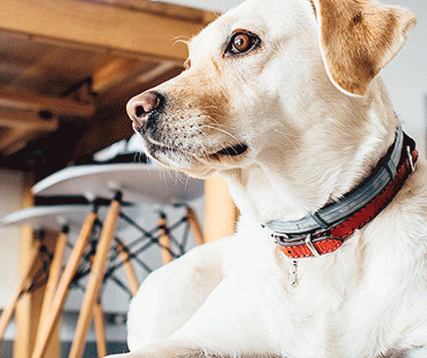
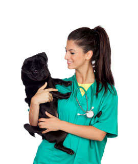
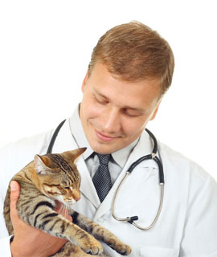
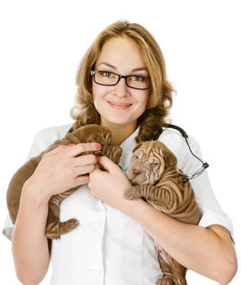

关于我们
About Us
宝贝宠物医院有限公司
LEADING BRAND
魔米宠物医院 是一家专业的宠物医院，位于苏州园区青剑湖曼哈顿广场9-110。医院地处成熟商业区，功能区面积400平方米，分区合理、设施完善、国内先进工作流程。宠物医院成立于1998年隶属于医疗集团股份有限公司，全国共有近百家直营分院，分布于上海、广州、深圳、长沙。凭借阵容强大的专家团队、媲美港台的医疗设备、遵循规范、严谨的作业流程，每年为几十万只宠物提供高品质的服务。拥有一批高学历、临床经验丰富的宠物医师，其中硕士35人、博士2人，执业兽医师328人。
范围涵盖：宠物医疗保健、美容造型、寄养、洗浴、SPA、食品及用品等。临床经验丰富的宠物医师，其中硕士35人、博士2人，执业兽医师328人。有完善的宠物内科、心血管科、骨科、软组织外科、眼科、肿瘤科、牙科、皮肤科、影像科、猫科等科室每年为几十万只宠物提供高品质的服务。范围涵盖：宠物医疗保健、美容造型、寄养、洗浴、SPA、食品及用品等。临床经验丰富的宠物医师，其中硕士35人、博士2人，执业兽医师328人。有完善的宠物内科、心血管科、骨科、软组织外科、眼科、肿瘤科、牙科、皮肤科、影像科、猫科等科室

—我们的愿景与使命—
爱岗敬业，团结合作，积极进取，真诚服务，努力提高专业水平，赶超世界一流水平
珍爱生命，为宠物创造良好的生存环境，为宠物减轻疾病的痛苦，促进人与宠物间的协调发展。
努力建设成为大型、转诊型、综合性、国际性宠物医院，建成国内一流的小动物医院，为您的宠物提供可靠的专业医疗服务。
萌宠团对
Our Team


